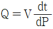
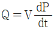
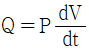
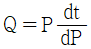

침투비파괴검사산업기사 (2016-10-01 기출문제)
1과목: 비파괴검사 개론
1. 다음 중 침투탐상시험으로 검사할 수 없는 시험품은?
- 유리
- 플라스틱
- 알루미늄
- 다공성 세라믹(ceramic)
(정답률: 89%)

2. 자분탐상시험에서 시험체에 자속이 흘러 자기를 띤 상태가 되는 것을 무엇이라 하는가?
- 자화
- 강자성
- 누설자속
- 자분의 적용
(정답률: 94%)
3. 감마선 투과검사가 X선과 비교하였을 때의 설명으로 틀린 것은?
- 이동성이 좋다.
- 외부 전원이 필요하다.
- 열려 있는 작은 직경에도 사용할 수 있다.
- 360° 또는 일정 방향으로 투사의 조절이 가능하다.
(정답률: 65%)
4. 다음 비파괴검사의 특성 중 틀린 것은?
- 침투탐상검사에서 표면이 개구 되지 않은 결함은 검출이 어렵다.
- 방사선투과검사는 원리적으로 투과법이다.
- 초음파탕상검사는 방사선투과검사보다 두꺼운 것까지 검사할 수 있다.
- 초음파탐상검사시 초음파의 입사 방향과 결함의 방향이 평행일 때 탐상감도가 가장 좋다.
(정답률: 65%)
5. 누설률을 구하는 식으로 옳은 것은? (단, P : 기체의 압력, Q : 누설률, V : 사자의 부피, t : 기체를 모으는 시간이다.)




(정답률: 80%)
6. 베어링 합금의 구비조건으로 틀린 것은?
- 하중에 견딜 수 있는 정도의 경도와 내압력을 가질 것
- 주조성과 절삭성이 좋고 열전도율이 클 것
- 마찰계수가 크고 저항력이 적을 것
- 내소착성이 크고 인성이 있을 것
(정답률: 78%)
7. 0.6%C를 함유한 강은 어느 강에 해당되는가?
- 아공석강
- 과공석강
- 공석강
- 극연강
(정답률: 74%)
8. 양백(양은)의 주요 합금원소로 옳은 것은?
- Zn+Ni+Sn
- Cu+Ni+P
- Cu+Zn+Ni
- Cu+Sn+Cr
(정답률: 79%)
9. 물과 얼음이 평행을 이룰 때 자유도는?
- 0
- 1
- 2
- 3
(정답률: 86%)
10. 황동의 기계적 성질 중에서 인장강도가 최대일 때의 Zn 함유량은?
- 30%
- 40%
- 50%
- 60%
(정답률: 60%)
11. 다음 결정입자에 관한 설명 중으로 틀린 것은?
- 가공도가 작을수록 결정입자는 크다.
- 가열시간이 길수록 결정입자는 크다.
- 가열온도가 높을수록 결정입자는 크다.
- 가공 전 결정입자가 크면 재경정후 결정입자는 작다.
(정답률: 67%)
12. 다음 중 마그네슘 합금이 아닌 것은?
- 다우메탈
- 미쉬메탈
- 퍼멀로이
- 엘렉트론
(정답률: 75%)
13. 고속도 공구강(high speed tool steel)이 갖추어야 할 성질이 아닌 것은?
- 뜨임 저항성이 없어야한다.
- 적열강도가 좋아야 한다.
- 내마모성이 우수해야 한다.
- 높은 경도를 가져야 한다.
(정답률: 73%)
14. 비정질합금의 특성을 설명한 것 중 옳은 것은?
- 구조적으로 장거리의 규칙성이 없다.
- 불균질한 재료이고 결정이방성이 없다.
- 열에 강하며 고온에서 결정화를 일으킨다.
- 강도가 낮고 연성이 작아 가공경화를 일으킨다.
(정답률: 40%)
15. 초전도재료에 대한 설명 중 틀린 것은?
- 초전도선은 전력의 소비없이 대전류를 통하거나 코일을 만들어 강한 자계를 발생시킬 수 있다.
- 초전도상태는 어떤 임계온도, 임계자계, 임계전류밀도보다 그 이상의 값을 가질 때만 일어난다.
- 임의의 어떤 재료를 냉각시킬 때 어느 임계온도에서 전기저항이 0(ZERO)이 되는 재료를 말한다.
- 대표적인 활용 사례로는 고압송전선, 핵융합용전자석, 핵자기공명단층영상장치 등이 있다.
(정답률: 64%)
16. 누설자속을 변동시켜 전류를 조절하는 방식으로 제작이 쉽고 간단하며, 연속적인 전류조정이 가능하나 아크가 불안정하고 진동으로 소음이 발생할 수 있는 특징을 가진 교류 아크 용접기는?
- 탭 전환형
- 가동 코일형
- 가동 철심형
- 가포화 리액터형
(정답률: 50%)
17. 다음 중 해머로 가볍게 두들겨서 잔류응력을 제거(완화)하는 방법과 가장 관계있는 것은?
- 피닝법
- 국부 응력 제거법
- 저온 응력 완화법
- 기계적 응력 완화법
(정답률: 78%)
18. 용접부의 변형과 잔류 응력을 경감시키는 방법이 아닌 것은?
- 억제법
- 도열법
- 역변형법
- 버터링법
(정답률: 77%)
19. 맞대기 용접 모재의 인장강도가 450 MPa, 용접 시험편의 인장강도가 443MPa 인 경우의 이음 효율은 약 %인가?
- 71.1
- 72.2
- 98.4
- 101.5
(정답률: 71%)
20. 용접기의 특성 중 부하 전류가 증가하면 단자 전압이 저하하는 특성은?
- 상승 특성
- 수하 특성
- 정전류 특성
- 정전압 특성
(정답률: 76%)
2과목: 침투탐상검사 원리 및 규격
21. 시험체 표면의 산화 스케일을 제거하기 위해 사용되는 전처리방법 중 가장 효과적인 것은?
- 증기세척
- 초음파세척
- 알카리 세척
- 산세척
(정답률: 63%)
22. 주조품의 표면을 침투탐상하여 나타난 탕계 지시의 원인인 것은?
- 반복하중에 의한 열응력 피로에 의해 발생한다.
- 온도 분포에 기인하여 모재보다는 열영향부에 발생한다.
- 용탕 주입 후 응고될 때 내ㆍ외부의 응고속도 차이로 발생한다.
- 주조 조건이 부적당하여 완전히 융합되지 않을 때 발생한다.
(정답률: 46%)
23. 침투탐상시험 시 침투액이 시험체 표면을 적시는 적심성은 어느 것과 가장 관계가 깊은가?
- 비중
- 점도
- 접촉각
- 쿨롱력
(정답률: 83%)
24. 침투액의 감도에 영향을 주는 오염물질로 볼 수 없는 것은?
- 유지
- 물
- 소금
- 공기
(정답률: 91%)
25. 액체 침투탐상검사의 효과를 증대시키기 위해 갖추어야 할 침투액의 조건으로 틀린 것은?
- 시험면에 존재하는 미세한 결함 속으로 쉽게 침투되어야 한다.
- 열이나 빛 자외선을 비추어도 색체대비나 형광 휘도의 변화가 없어야 한다.
- 세척성이 좋아야 한다.
- 인화점이 높지 않아야 하고 온도 변화에 민감해야 한다.
(정답률: 89%)
26. 수세성 침투탐상검사를 할 때의 주의점이 아닌 것은?
- 세척 시의 물의 압력은 별도의 규정이 없고, 완전히 세척만 되면 된다.
- 지시된 침투시간이 넘지 않는 것을 확인한다.
- 검사부분의 과도한 세척을 피한다.
- 초과 침투액이 제거되었는지를 알기 위하여 자외선등을 사용하는 경우도 있다.
(정답률: 94%)
27. 다음 재료 중 점성(Viscosity)이 가장 큰 것은?
- 물
- 에테르
- 윤활유
- 에틸알콜
(정답률: 85%)
28. 형광침투탐상시험에서 나타나는 형광과 관련된 설명으로 틀린 것은?
- 320~400nm 정도의 파장을 가진 자외선은 인체에 매우 위험하므로 형광침투탐상에서는 잘 사용 되지 않는다.
- 형광침투액이 가장 강하게 녹황색을 발하는 경우는 파장이 3650Å 정도의 자외선에 노출된 경우이다.
- 자외선 조사장치에 부착된 필터는 3650Å정도의 파장을 갖는 자외선이 집중적으로 투과되는 것이어야 한다.
- 자외선도 일반적인 빛과 같이 시험면으로부터 거리가 멀어질수록 거리의 제곱에 반비례하여 강도가 약해진다.
(정답률: 81%)
29. 시험체의 재질이 연강일 때 침투탐상시험의 전처리 방법으로 부적절한 것은?
- 알카리 세척
- 모래분사법
- 증기세척
- 용제분무법
(정답률: 82%)
30. 다음 중 모세관현상을 결정하는 요인으로 가장 거리가 먼 것은?
- 응집력
- 접촉각
- 삼투압
- 표면장력
(정답률: 76%)
31. 보일러 및 압력용기의 침투탐상검사 (ASME Sec.V, Art.6 App.Ⅱ)에서는 검사에 사용되는 탐상제에 대한 오염의 관리를 규정하고 있다. 오염의 함유량에 대한 성적서를 보관 및 관리하지 않아도 되는 시험체는?
- 코발트 합금
- 니켈 합금
- 티타늄
- 오스테나이트 스테인리스강
(정답률: 52%)
32. 침투탐상 시험방법 및 침투지시모영의 분류(KS B 0816)에서 침투지시의 관찰에 관한 규정사항으로 옳은 것은?
- 현상제 적용 후 7~60분 사이에 관찰하는 것이 바람직하다.
- 형광침투시험은 관찰하기 전에 30초 이상 어두운 곳에서 눈을 적용시킨다.
- 형광침투시험의 시험면 표면은 600μW/cm2이상의 자외선을 비추면서 관찰한다.
- 염색침투시험에서 시험면의 밝기는 20Lux이상의 자연광에서 관찰하는 것이 좋다.
(정답률: 83%)
33. 침투탐상 시험방법 및 침투지시모영의 분류(KS B 0816)에 규정된 침투탐상시험을 위한 A형 대비시험편의 제작 방법으로 옳은 것은?
- 판 한 면 중앙부를 분젠버너로 520~530℃로 가열하여 가열한 면을 흐르는 물로 급냉시켜 갈라지게 한다.
- 판의 한쪽 면 중앙부를 담금질하고 반대 쪽은 Annealing한 후 중앙부에 흠을 가공한다.
- 판의 양면을 Tempering한 후 중앙부에 기계가공으로 구멍을 뚫는다.
- 판의 양면을 800~900℃정도 가열시킨 후 급냉시키고 한쪽은 갈라지게 하고 반대 면은 중앙부에 흠을 기계 가공하여 뚫는다.
(정답률: 79%)
34. 침투탕상 시험방법 및 침투지시모양의 분류(KS B0816)에서 물세척을 할 수 없는 침투제는?
- 수세성 침투제
- 기름베이스 유화성 침투제
- 물베이스 유화성 침투제
- 용제제거성 침투제
(정답률: 72%)
35. 보일러 및 압력용기에 대한 침투탐상검사(ASME Sec.V Art.6)에서 최소 침투 시간이 가장 긴 것은?
- 강용접부의 균열
- 플라스틱의 균열
- 알루미늄 단조품의 랩
- 세라믹의 기공
(정답률: 81%)
36. 침투탐상 시험방법 및 침투지시모양의 분류(KS B 0816)의 B형 대비시험편에서 인공 결함을 검출하기 가장 어려운 것은?
- PT-B50
- PT-B30
- PT-B20
- PT-B10
(정답률: 69%)
37. 보일러 및 압력용기에 대한 침투탕삼검사(ASME Sec.V Art.6)에 따라 염색침투제를 사용하는 경우의 현상제로 옳은 것은?
- 건식
- 습식
- 속건식
- 건식과 습식
(정답률: 42%)
38. ASME Sec.Ⅷ 에 따라 압력용기의 강용접부를 침투탐상하였을 때 합격이 될 수 있는 것은?
- 2mm의 선형 침투지시
- 5mm를 초과하는 원형 침투지시
- 1.5mm 간격으로 1.6mm의 침투지시 4개가 일직선으로 있을 때
- 나비가 2mm이고 길이가 4mm인 침투지시
(정답률: 52%)
39. 보일러 및 압력용기에 대한 침투탐상검사(ASME Sec.V Art.6)에따라 형광침투탕상시험을 하려한다. 암실에서의 눈적응을 위해 검사수행정 얼마의 적응시간을 갖도록 요구하는가?
- 최소10분
- 최소 5분
- 최소 1분
- 관계 없다.
(정답률: 54%)
40. 침투탕삼 시험방법 및 침투지시모양의 분류(KS B 0816)에서 합격한 시험체에 표시를 할 때 표시방법과 거리가 먼 것은?
- 각인
- 부식
- 녹자색 착색
- 적갈색 착색
(정답률: 70%)
3과목: 침투탐상검사 시험
41. 침투탐상검사를 할 때 시험방법의 선정시 고려할 사항과 거리가 먼 것은?
- 시험체의 제조자
- 예상되는 결함의 형태
- 검사장소의 주변환경
- 적용되는 규격이나 절차서
(정답률: 86%)
42. 침투탐상검사에 사용되는 탐상제로 구성된 것은?
- 침투액, 유화제, 현상제, 세척액
- 침투액, 수세성 제거액, 세척액, 습식자분
- 침투액, 세척액, 현상제, 물 스프레이
- 침투액, 세척액, 현상제, 좌외선조사등
(정답률: 91%)
43. 침투탕삼시험에서 의사지시가 나타날 수 있는 경우로 잘못 기술된 것은?
- 전처리가 불충분하여 녹이나 스케일이 남아있는 경우
- 유화처리가 부적당하여 침투액이 표면에 잔존해 있는 경우
- 세척처리 부적당하여 침투액이 표면에 잔존해 있는 경우
- 용접부와 모재와의 접합부에 언더컷이 생겨 있는 경우
(정답률: 86%)
44. 시험온도 범위가 15~50℃ 일 때 일반적으로 권고되는 침투시간이 가장 짧은 시험대상품은?
- 강 압연품
- 강 압출품
- 알루미늄 주조품
- 알루미늄 단조품
(정답률: 77%)
45. 침투탕삼시험에서 침투제의 성능 시험방법이 아닌 것은?
- 감도시험
- 수분함량 시험
- 점성 시험
- 화학적 불활성 시험
(정답률: 70%)
46. 비교적 큰 결함에서는 현상제의 유형이 그리 중요하지 않은데 그 이유는?
- 현상제를 적용하지 않아도 결함의 검출이 용이하기 때문
- 현상제의 성능과 관계없이 결함 검출이 잘되기 때문
- 작은 결함에 비하여 침투액의 배출 압력이 높기 때문
- 작은 결함에 비하여 현상제와의 반응이 좋기 때문
(정답률: 66%)
47. 형광침투액을 사용할 때 자외선 조사등이 필요한 이유는?
- 침투액이 형광을 발하도록 하기 때문에
- 시험체의 표면장력을 감소시키기 때문에
- 표면의 과잉 침투액을 중화시키기 때문에
- 침투의 특성인 모세관작용을 돕기 때문에
(정답률: 92%)
48. 용접부를 자분탐상하는 것보다 침투탐상하는 것이 감도가 좋은 결함의 종류는?
- 기공
- 균열
- 융합불량
- 용입부족
(정답률: 54%)
49. 침투탐상에 사용되는 알루미늄 대비시험편에 대한 설명으로 틀린 것은?
- 재사용 할 수 없다.
- 현상제의 감도 시험에도 이용할 수 있다.
- 적절한 세척을 한 후 여러 번 사용할 수 있다.
- 두 종류의 침투제에 대한 감도 비교시험용으로 이용한다.
(정답률: 79%)
50. 침투탐상시험으로 표면이 거친 부품을 검사하는데 가장 적절한 방법은?
- 수세성 사용
- 후유화성 사용
- 용제제거성 사용
- 잉여침투성 사용
(정답률: 87%)
51. 침투탐상검사 결과를 판독할 때 길이가 나비의 5배인 관련지시 모양을 발견했다. 이 지시의 분류로 적당한 것은?
- 원형지시모양
- 선현지시모양
- 타원형지시모양
- 비관련지시
(정답률: 78%)
52. 다양한 검사체에 존재하는 불연속의 현태에 따라서 침투시간이 다르다. 일반적으로 미세하고 조밀한 균열이 예상될 때의 침투시간은?
- 크고 얕은 불연속보다 짧은 침투시간이 요구된다.
- 크고 앝은 불연속보다 긴 침투시간이 요구된다.
- 크고 얕은 불연속과 같은 침투시간이 요구된다.
- 침투시간에 관계없이 부식처리 후 발견할 수 있다.
(정답률: 76%)
53. 하전입자의 흡착성을 이용한 침투탐상법에서 현상처리에 사용하는 현상제는?
- 알코올
- 솔벤트
- 탄산칼슘
- 탄산나트륨
(정답률: 63%)
54. 침투탐상검사 시 침지, 분무, 붓칠, 흘림법 등을 모두 적용할 수 있는 처리법으로 옳은 것은?
- 침투처리
- 세척처리
- 유화처리
- 현상처리
(정답률: 77%)
55. 현장검사에 사용되는 휴대용 자외선등의 고압수은등은 일반적으로 몇 [W]의 것이 사용되는가?
- 10
- 50
- 100
- 800
(정답률: 79%)
56. 형광침투탐상검사에서 시험품표 표면을 건조하기 위한 건조처리장치로 가장 적합한 것은?
- 적열기
- 적외선 건조기
- 열풍 순환식 건조기
- 백열등을 사용한 건조기
(정답률: 83%)
57. 침투탐상검사 시 침투제에 대한 설명으로 틀린 것은?
- 수세성 염색침투제는 수분이 혼입되면 침투액의 성능이 저하된다.
- 용제제거성 형광침투제는 표면이 거친 시험체에 사용하는 것은 비효율적이다.
- 수세성 염색침투제는 표면이 거친 시험체에 적합하다.
- 용제제거성 염색침투제는 조작 순서가 매우 복잡하다.
(정답률: 83%)
58. 침투탐상검사에서 건조된 백색 미분말의 현상제를 그대로 사용하는 현상법은?
- 무현상법
- 건식현상법
- 습식현상법
- 속건식현상법
(정답률: 72%)
59. 수세성 형광침투탐상검사의 장점으로 거리가 먼 것은?
- 넓은 면적을 간단한 조작으로 탐상하기 쉽다.
- 수분이 있어도 침투액의 성능에는 변화가 없다.
- 비교적 거친 시험체에 대해서도 적용이 가능하다.
- 열쇠 구멍이나 나사부와 같은 복잡한 형상에도 적용이 가능하다.
(정답률: 73%)
60. 염색 침투탐상제를 사용하여 검사한 후, 감도가 높은 형광침투탐상제를 사용하여 재시험을 실시하려고 한다. 다음 절차 중 옳은 것은?
- 검사체를 이전에 실시한 온도보다 더 가열시켜 실시한다.
- 침투처리 후에 세척제를 다른 것으로 사용한다.
- 결함 속의 침투액을 완전히 제거할 수 있도록 전처리 한다.
- 현상시간을 2배 정도 길게 한다.
(정답률: 90%)